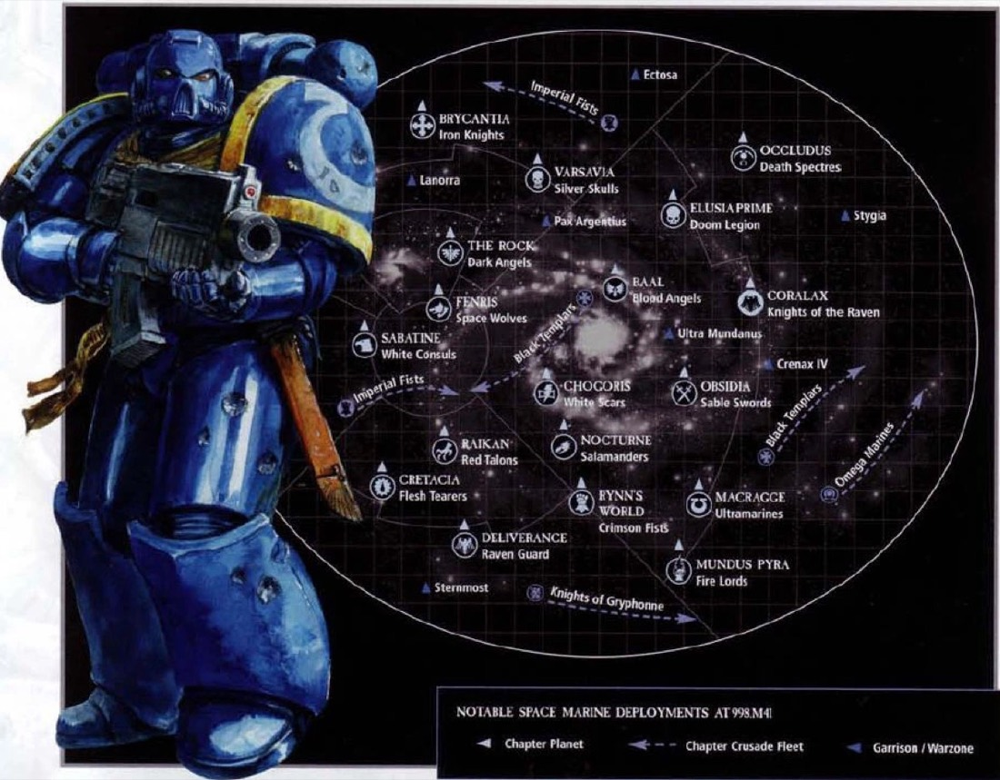

Space Marine Chapter
| Space Marine Chapter | |
|---|---|
| Basic formation of the Adeptus Astartes | |
Emblem of the Adeptus Astartes, borne by every Chapter Artwork © Games Workshop | |
| Established | From 021.M31 (Second Founding) |
| Governing text | Codex Astartes |
| Size | About 1,000 battle-brothers, plus serfs and servitors |
| Command | Chapter Master |
| Structure | Ten companies; four branches (Armoury, Reclusium, Apothecarion, Librarius) |
| Home | Fortress-monastery on a planet, moon or asteroid, or a fleet |
| Heraldry | Each Chapter and company has its own colours and icons |
| Variants | |
| Codex | Ultramarines, Imperial Fists |
| Non-Codex | Space Wolves, Dark Angels, Blood Angels, Black Templars |
| Primaris | Chapters of the Ultima Founding |
A Space Marine Chapter is the basic unit of the Adeptus Astartes: a self-governing brotherhood of roughly a thousand transhuman warriors, with its own fortress, fleet, gene-seed, recruiting grounds and traditions. Chapters were created by the Codex Astartes of Roboute Guilliman in the Second Founding, when the great Space Marine Legions of the Great Crusade were broken into smaller bodies in the wake of the Horus Heresy (005–014.M31). The Codex fixed the size, the structure and the duties of a Chapter, and the pattern has been used with modifications by almost all the Chapters raised since.[1]
The Chapter system was intended to prevent a repetition of the Heresy. Under the Legion system, a single primarch could command a force numbered in the hundreds of thousands, with its own fleets and worlds. A Chapter is by design small enough to be strategically useful and too small to challenge the Imperium on its own. Each Chapter chooses its own commanders, manages its own recruitment and raises its own warriors, and the Imperium's institutions have no power over the Chapters beyond the claim to a tithe of gene-seed and the right to call on them in the Emperor's name.[1][2]
By the Era Indomitus the Chapters number about a thousand, though no census has ever been kept. Many are old; a few are as young as the Ultima Founding, which Guilliman raised in the wake of the opening of the Great Rift; and a good number have been destroyed, scattered or lost. A Chapter that is described as "Codex" follows the organisation described below. Several of the oldest and most famous do not, and other Chapters have diverged for reasons of history or of faith.[3]
Organisation
[edit]
Chapter command
[edit]The Chapter is led by the Chapter Master, an accomplished warrior and strategist who answers to his Chapter and, in principle, to the Imperium. He is usually accompanied by an honour guard of veterans and a household of serfs. His title varies between Chapters: the Dark Angels' leader is the Supreme Grand Master, the Space Wolves' is the Great Wolf, the Blood Angels' is the Commander, and the Black Templars' is the High Marshal. A Chapter Master holds his post for life or until he resigns, falls or is deposed, and is generally chosen by his brothers rather than appointed.[1]
The Codex gives the Chapter Master the assistance of four senior officers, each of whom heads a branch of the Chapter.[1]
- The Armoury, under the Master of the Forge, holds the Techmarines, servitors, vehicles, gunships and battle tanks.
- The Reclusium, under the Master of Sanctity, is the home of the Chaplains, who lead the Chapter's rites and tend its spiritual life.
- The Apothecarion, under the Chief Apothecary, treats the wounded, recovers the dead and stores the Chapter's gene-seed.
- The Librarius, under the Chief Librarian, trains the Chapter's psykers and holds its lore.
The Chapter also maintains a fleet, which the Codex calls for every Chapter to have. Some Chapters are fleet-based and have no planetary home. A Chapter's ships include battle barges, strike cruisers and escorts, and the warriors travel to war in the Chapter's Thunderhawks, drop pods and boarding torpedoes.[1]
The ten companies
[edit]The warriors of a Codex Chapter are divided into ten companies of about a hundred warriors, each led by a captain and given its own colours and company badge. The pattern was designed to ensure flexibility and endurance. The First Company is composed of veterans, the Second to Fifth are the battle companies who do most of the fighting, the Sixth to Ninth are the reserve companies that replace casualties and fight in specialised roles, and the Tenth is the Scout Company, in which recruits are trained and tested.[1]
| Company | Type | Heraldic colour | Captain's traditional office | Composition |
|---|---|---|---|---|
| 1st | Veteran Company | White and silver | Master of the Keep | Veterans and Terminators, Dreadnoughts; may provide the Chapter Master's honour guard |
| 2nd | Battle Company | Yellow and gold | Master of the Watch | Six Battleline, two Close Support and two Fire Support squads, command squad, Dreadnoughts |
| 3rd | Battle Company | Red | Master of the Arsenal | As the Second |
| 4th | Battle Company | Green | Master of the Fleet | As the Second |
| 5th | Battle Company | Black | Master of the Marches | As the Second |
| 6th | Reserve Battleline | Orange | Master of the Rites | Ten Battleline squads, Dreadnoughts |
| 7th | Reserve Battleline | Violet | Chief Victualler | Ten Battleline squads, Dreadnoughts |
| 8th | Reserve Close Support | Grey | Lord Executioner | Ten Close Support squads, Dreadnoughts |
| 9th | Reserve Fire Support | Blue | Master of Relics | Ten Fire Support squads, Dreadnoughts |
| 10th | Scout Company | None | Master of Recruits and Master of Reconnaissance | Ten squads of Scouts, with Vanguard squads |
Each battle company is a self-contained fighting force of up to a hundred warriors, which can take the field alone. Their captains command the strike forces of the Chapter in its campaigns, and the Reserve companies are used for garrisons, for support and as sources of replacements. The Codex gives the Reserve companies particular responsibility for bolstering the front: when a battle company's losses mount, its reserve squads are drawn up to refill it. Squads of ten are the standard unit of all companies, and a battle company's six Battleline squads, two Close Support and two Fire Support squads match the three standard roles of Codex doctrine.[1]
In the Era Indomitus the Battleline squads of most Chapters are composed of Tactical Marines or Primaris Intercessors, and Close Support and Fire Support squads draw on the wider Primaris range of Assault Marines, Inceptors, Reivers, Devastators, Hellblasters and Aggressors. The distinction between the Battleline, Close Support and Fire Support squads has replaced the older division of Tactical, Assault and Devastator squads in many Chapters' rolls.[3]
Heraldry
[edit]The Codex requires each company to have its own colour and symbol, worn on the Marines' shoulder plates and on the Chapter's vehicles and banners, so that the position of any Marine in the Chapter may be seen at a glance. Chapters that diverge from the Codex often adapt rather than abandon the symbols: the Salamanders and the Sons of Medusa are well-known examples. Chapter colours are carefully recorded, and an Imperial heraldist can usually tell from a Marine's armour not only his Chapter but also his company, his squad and his role.[1]
Home worlds and recruitment
[edit]A Chapter's home may be a fortress-monastery on a world of its own, as is the case for the Ultramarines on Macragge and the Blood Angels on Baal, a moon or asteroid, or a fleet. The Dark Angels fight from the asteroid-fortress called the Rock, and the Imperial Fists from the ancient warship Phalanx. Chapters with a homeworld recruit chiefly from it and from the worlds under its protection, and they usually maintain a ruling relationship with the planet's population, as the Ultramarines do over the Five Hundred Worlds of Ultramar. Chapters without a homeworld recruit from a variety of sources, and travel among them to select Aspirants.[2]
Recruitment is controlled by the Chapter. The Administratum does not set recruitment quotas, but it records which worlds provide recruits, and the Chapters tithe a share of their gene-seed to the vaults of Terra. A Chapter that cannot find enough recruits, or whose gene-seed is damaged, may be unable to replace its losses, and many have dwindled for this reason. In the Era Indomitus several Chapters have also been reinforced by Primaris Marines delivered by the Indomitus Crusade, and have begun to induct their own Primaris recruits.[3]
Foundings and successors
[edit]A Founding is an act by which the Imperium authorises the creation of a number of new Chapters, usually in response to a period of heavy losses. The first was the Founding of the twenty Legions. The Second Founding began in 021.M31 and broke the loyal Legions into Chapters; the Third Founding, which Rogal Dorn requested after the Great Scouring, issued more than a hundred writs of succession; and others followed at long intervals. The Imperium reckons twenty-seven Foundings up to the present, the last of them the Ultima Founding.[4] A full list of the best-known Foundings is given in the article on the Adeptus Astartes.
The Chapters created in a Founding are called Successor Chapters of the parent from which their gene-seed was drawn. The Successors follow the parent's customs to varying degrees. Each one's Chapter Master reports to himself and not to the parent, though many keep strong ties, and some are bound by oaths to answer the parent's call. The most prolific parents are the Ultramarines, from which dozens of Chapters descend, the Imperial Fists, the Blood Angels with their Sanguinary Brotherhood, and the Dark Angels, whose Successors are known as the Unforgiven. The Space Wolves have raised only a few, and most of those have ended badly; the only known Space Wolves Successor of the First Founding era was the Wolf Brothers, who were disbanded after their gene-seed became unstable.[2][4]
Chapters of one lineage often share a fighting style, a gene-seed weakness or a rivalry. Several of the greatest feuds are between related Chapters; and a Chapter raised from a parent's gene-seed is not immune to the parent's defects. The Imperial Fists have lost the use of two implants, the Betcher's Gland and the Sus-an Membrane, and the Blood Angels' Successors, with a few exceptions, carry the Red Thirst and the Black Rage in some measure.[4]
Non-Codex Chapters
[edit]The Codex Astartes is a recommendation, not a law, and a number of Chapters have never fully adopted it. The oldest examples are those who resisted Guilliman's Second Founding: the Space Wolves, who were allowed to keep their Great Companies; the Dark Angels, who kept their secret order and their specialist wings, the Deathwing and Ravenwing; and the Blood Angels, who retained much of their Legion structure. The Black Templars, who fight as a perpetual crusade, are the largest non-Codex Chapter and field several thousand warriors. Other Chapters, such as the Salamanders and the White Scars, follow the Codex only loosely.[2]
In the Era Indomitus Guilliman has confirmed that the non-Codex Chapters may keep their own forms provided they serve the Emperor well. He has used the same authority to rewrite parts of the Codex, an updated edition of which accompanies the Indomitus Crusade. The updated Codex sets Primaris squads alongside the older ones, and allows Chapters more latitude in the composition of their companies. The earlier text is still widely used and quoted.[3]
Chapters in the Era Indomitus
[edit]Since the opening of the Great Rift the Chapters have been dispersed across the Imperium Sanctus and the Imperium Nihilus. Guilliman has used his authority as Lord Commander to move them where they are needed, and to ask for the assistance of Chapters that had previously declined to take part in wars outside their own territories. Many Chapters have suffered heavy casualties and a few have been destroyed. Others have been recovered: a number of Chapters that had been thought lost, including some that had long been silent in the Warp, have been located by the Indomitus Crusade and brought back to the fold.[3]
Primaris Marines now form a large part of every Chapter. A Chapter's Firstborn and Primaris brothers keep the same company badges and the same colours, and the Chapter's Apothecarion may offer a wounded battle-brother the chance to cross the Rubicon Primaris. Some Chapters, especially those of the Ultima Founding, are composed entirely of Primaris Marines.[3]
Timeline
[edit]| Date | Event |
|---|---|
| c. 019.M31[a] | Roboute Guilliman completes the Codex Astartes, which fixes the size, structure and duties of a Chapter. |
| 021.M31 | The Second Founding begins, and the surviving Legions are divided into Chapters. |
| M31 | The Third Founding, requested by Rogal Dorn after the Great Scouring, issues more than a hundred writs of succession. |
| c. 550.M32[b] | The Fourth Founding follows the War of the Beast, the largest since the First. |
| 991.M35 | The Cursed Founding produces Chapters with flawed gene-seed. |
| M35–M36 | The Dark Founding produces a Chapter whose gene-seed is never tithed to Terra. |
| Late M37–early M38 | The Sentinel Founding makes good the losses of the Age of Apostasy. |
| Late M40 | The Bastion Founding raises the Emperor's Spears, the Fire Angels and the Star Scorpions. |
| 738.M41 | A single Chapter, the Mentors, is raised in the Twenty-sixth Founding. |
| 999.M41 | The opening of the Great Rift disperses the Chapters across the Imperium Sanctus and the Imperium Nihilus. |
| 999.M41 | The Ultima Founding raises Primaris Chapters from the Primaris Marines woken at the start of the Indomitus Crusade. |
| c. 012.M42[c] | Guilliman confirms that non-Codex Chapters may keep their own forms, and an updated Codex accompanies the Indomitus Crusade. |
See also
[edit]Notes
[edit]References
[edit]- ^ a b c d e f g h i Codex: Space Marines (9th Edition), pp. 4-87, 108-111. Games Workshop. Haley, Guy. Dark Imperium (novel). Black Library, Chs. 6, 7, 12, 13, 15, 18, 20.
- ^ a b c d Codex Adeptus Astartes - Space Marines (8th Edition), pp. 10-11, 14, 16-17, 18-19, 62, 130-187. Games Workshop. Codex: Adeptus Custodes (8th Edition), pg. 9. Games Workshop.
- ^ a b c d e f Codex: Space Marines (8th Edition) (Revised Codex), pp. 6-21, 184-185. Games Workshop. Haley, Guy. Avenging Son (novel). Black Library.
- ^ a b c Warhammer 40,000: Rulebook (8th Edition), pp. 40-41, 61-63. Games Workshop. Codex: Space Marines (7th Edition) (Digital Edition), "The Forging of Heroes," "Chapter Organisation," "Codex Astartes", "The Chronicle of Heroes", "Forces of the Space Marines". Games Workshop.